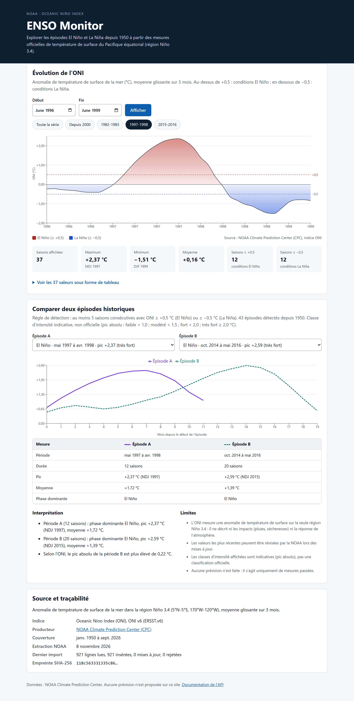

Dossier de conception d'une plateforme d'analyse des épisodes El Niño et La Niña
Application web qui importe l'Oceanic Niño Index publié par la NOAA dans PostgreSQL, l'expose par une API FastAPI et le rend explorable dans une interface React : courbe filtrable, détection des épisodes et comparaison prudente de deux épisodes historiques.
enso-monitor/ (README, tests, scripts)| Exigence du MVP | Réponse apportée |
|---|---|
| Importer une série NOAA authentique avec Python, identifier la source, contrôler les doublons | ONI v6 importé par un ETL pandas idempotent ; empreinte SHA-256, date d'extraction et volumes tracés dans data_import ; doublons écartés par le code et interdits par une contrainte UNIQUE. |
| API FastAPI documentée, filtrage temporel, validation | Routes versionnées /api/v1, OpenAPI sur /api/docs, format AAAA-MM validé, codes 404 et 422 explicites. |
| Courbe interactive React/TypeScript avec filtre de période | Graphique Recharts, sélecteur de mois et périodes prédéfinies, statistiques recalculées, tableau accessible. |
| Comparer deux épisodes, interprétation prudente | 43 épisodes détectés selon la règle NOAA ; courbes superposées, tableau comparatif, interprétation descriptive et limites affichées. |
Résultat vérifiable : 921 saisons importées sans rejet, 22 tests Pytest et 3 tests Vitest au vert, pile complète démarrée par docker compose up.
El Niño et La Niña sont les deux phases opposées de l'oscillation australe (ENSO) : un réchauffement ou un refroidissement anormal des eaux de surface du Pacifique équatorial, avec des effets sur le climat mondial. Ces épisodes sont souvent commentés (« le plus fort depuis… ») sans que le public puisse vérifier les chiffres. ENSO Monitor transforme la mesure officielle de la NOAA en visualisations compréhensibles, sourcées et vérifiables.
| Profil | Besoin principal | Conséquence sur la conception |
|---|---|---|
| Étudiant, enseignant, curieux | Voir l'historique et situer un épisode récent par rapport aux grands épisodes passés. | Périodes prédéfinies, vocabulaire expliqué, seuils visibles sur la courbe. |
| Journaliste, vulgarisateur | Comparer deux épisodes avec des chiffres citables et une source claire. | Comparaison chiffrée, source et version affichées, interprétation prudente. |
| Exploitant technique | Mettre à jour la série quand la NOAA publie une nouvelle valeur. | ETL en ligne de commande, idempotent, journal d'import. |
Le sujet impose une seule série, ONI ou RONI. L'ONI (Oceanic Niño Index) est la moyenne glissante sur trois mois de l'anomalie de température de surface de la mer dans la région Niño 3.4 (5°N-5°S, 170°W-120°W). Il a été retenu parce que c'est l'indice historique de référence de la NOAA, celui sur lequel repose la définition opérationnelle des épisodes, et qu'il est le plus cité, donc le plus facile à recouper. Le RONI (version relative, corrigée du réchauffement global des océans) est une extension possible : le modèle de données accepte plusieurs indices sans modification.
DJF 1998 couvre décembre 1997, janvier et février 1998 ; elle est rattachée à son mois central (janvier 1998).
Limite du sujet lui-même : l'expression « Super El Niño » n'a pas de définition scientifique universelle. L'application affiche une classe d'intensité indicative fondée uniquement sur le pic de l'ONI, avec ses seuils, et n'emploie pas cette expression.
| ID | En tant que…, je veux…, afin de… | Priorité | Critères d'acceptation |
|---|---|---|---|
| US1 | En tant qu'exploitant, je veux importer la série ONI de la NOAA afin de disposer de données officielles en base. | Must | 921 lignes importées ; relancer l'import n'ajoute aucun doublon ; source, version, date d'extraction et empreinte enregistrées. |
| US2 | En tant que visiteur, je veux voir la courbe de l'ONI afin de repérer les épisodes chauds et froids. | Must | Courbe 1950-2026 ; unité (°C), seuils ±0,5 et source visibles ; valeur exacte au survol. |
| US3 | En tant que visiteur, je veux choisir une période afin de zoomer sur un épisode. | Must | Début et fin au mois près ; période inversée refusée avec message ; courbe et statistiques mises à jour. |
| US4 | En tant que visiteur, je veux comparer deux épisodes afin de juger leur intensité et leur durée. | Must | Choix parmi les épisodes détectés ; pic, durée, moyenne côte à côte ; interprétation et limites écrites. |
| US5 | En tant que visiteur au clavier ou avec un lecteur d'écran, je veux accéder aux mêmes informations. | Must | Tous les contrôles atteignables au clavier ; focus visible ; tableau des valeurs et résumé textuel du graphique. |
| US6 | En tant que visiteur, je veux connaître l'origine des données afin de les vérifier. | Should | Producteur, lien, version, couverture, date d'extraction et volumes du dernier import affichés. |
| US7 | En tant qu'exploitant, je veux récupérer la dernière publication NOAA en une commande. | Should | --download met à jour fichier et métadonnées ; valeurs révisées mises à jour et rattachées au nouvel import. |
| US8 | En tant que visiteur, je veux voir les épisodes sur une carte ou les exporter. | Could | Non réalisé : extension sans impact sur le MVP. |
Mobile (≤ 600 px) : une colonne, champs empilés, cibles tactiles de 44 px, tableaux défilants.
Principe : une seule page, du général (série complète) au particulier (comparaison), la source toujours en bas de page. La maquette a été suivie ; le rendu final est présenté en section 6.
flowchart LR
V(["Visiteur"])
E(["Exploitant"])
N[("NOAA CPC")]
subgraph S["Système ENSO Monitor"]
UC1(["Consulter la courbe ONI"])
UC2(["Filtrer par période"])
UC3(["Consulter le tableau des valeurs"])
UC4(["Comparer deux épisodes"])
UC5(["Consulter source et traçabilité"])
UC6(["Importer ou mettre à jour la série"])
end
V --- UC1
V --- UC4
V --- UC5
UC2 -. "«extend»" .-> UC1
UC3 -. "«extend»" .-> UC1
E --- UC6
UC6 --- N
Deux acteurs. Le visiteur est anonyme : l'application est en lecture seule, aucun compte n'est nécessaire. L'exploitant n'a pas d'interface web : il lance l'ETL en ligne de commande, ce qui supprime une surface d'attaque (pas d'administration exposée). La NOAA est un acteur secondaire, fournisseur du fichier.
classDiagram
direction LR
class Source {
+id : int
+name : str
+organization : str
+url : str
}
class ClimateIndex {
+id : int
+code : str
+name : str
+unit : str
+version : str
+description : str
}
class DataImport {
+id : int
+file_url : str
+file_sha256 : str
+extracted_at : datetime
+imported_at : datetime
+rows_read / inserted / updated / rejected : int
+status : str
}
class Observation {
+id : int
+season : str
+year : int
+period : date
+total : decimal
+anomaly : decimal
}
class Episode {
<<calculé>>
+kind : el_nino | la_nina
+start, end : date
+seasons : int
+peak : float
+intensity : str
+ongoing : bool
}
Source "1" --> "1..*" ClimateIndex : publie
ClimateIndex "1" --> "0..*" DataImport : est importé par
ClimateIndex "1" --> "0..*" Observation : contient
DataImport "1" --> "0..*" Observation : a écrit
ClimateIndex ..> Episode : détecte
Cardinalités. Une source publie au moins un indice (une source sans indice n'a pas de raison d'exister). Un indice peut n'avoir encore aucun import ni observation (il est créé au premier import). Chaque observation pointe vers le dernier import qui l'a écrite : si la NOAA révise une valeur, la ligne est mise à jour et rattachée au nouvel import, ce qui garde une seule valeur par saison tout en sachant d'où elle vient. Episode n'est pas persisté : c'est un objet calculé à partir des observations (règle : au moins 5 saisons consécutives au-delà de ±0,5 °C).
sequenceDiagram actor U as Visiteur participant R as React participant C as Caddy participant A as FastAPI participant D as PostgreSQL U->>R: clic « 1997-1998 » R->>R: début ≤ fin ? R->>C: GET /observations
start=1996-06, end=1999-06 C->>A: relais (réseau interne) A->>A: valide AAAA-MM alt paramètre invalide ou indice inconnu A-->>R: 422 ou 404 + detail R-->>U: message + « Réessayer » else requête valide A->>D: SELECT … BETWEEN
:start AND :end D-->>A: 37 lignes triées A-->>C: 200 JSON C-->>R: 200 compressé R-->>U: courbe, indicateurs,
tableau à jour end
Lecture du diagramme : la route complète est /api/v1/indices/ONI/observations ; les étapes ci-dessous détaillent les contrôles.
| Étape | Ce qui se passe | Code concerné |
|---|---|---|
| 1. Saisie | Le filtre vérifie que les deux mois sont renseignés et que le début précède la fin ; sinon un message s'affiche et aucune requête ne part. | components/PeriodFilter.tsx |
| 2. Appel | Le client typé construit l'URL. Le hook annule la requête précédente si l'utilisateur change de période avant la réponse. | api/client.ts, hooks/useApi.ts |
| 3. Relais | Caddy reçoit tout sur un seul port et transmet /api/* à l'API, qui n'est pas joignable directement. | deploy/Caddyfile |
| 4. Validation | FastAPI contrôle le format AAAA-MM (expression régulière) et l'ordre des dates ; l'indice doit exister. | routers/indices.py |
| 5. Requête SQL | SQLAlchemy génère une requête paramétrée, servie par l'index de la contrainte UNIQUE (index_id, period). | load_points() |
| 6. Réponse | Le JSON contient source, unité et observations ; React recalcule courbe, indicateurs et tableau. | schemas.py, App.tsx |
| Erreurs | 422 (paramètre invalide), 404 (indice inconnu), panne réseau ou 5xx : message explicite et bouton « Réessayer », le reste de la page reste utilisable. | StatusMessage.tsx |
flowchart LR B["Navigateur
React + TypeScript"] -- "HTTP(S) :8080 / :443" --> W subgraph F["réseau frontend"] W["web · Caddy
fichiers statiques + reverse proxy"] end subgraph K["réseau backend"] A["api · FastAPI
validation, épisodes, comparaison"] D[("db · PostgreSQL 17
volume pgdata")] E["etl · Python / pandas
tâche ponctuelle"] end W -- "/api/*" --> A A -- "SQLAlchemy" --> D E -- "upsert transactionnel" --> D N[["NOAA CPC
oni.ascii.txt"]] -. "--download" .-> E G[["data/raw
instantané versionné"]] --> E
| Composant | Responsabilité | Échanges |
|---|---|---|
| Frontend React | Afficher, filtrer, comparer ; valider les saisies ; gérer chargement et erreurs. Composants : PeriodFilter, OniChart, SeriesStats, DataTable, EpisodeCompare, SourceInfo. | Client typé api/client.ts, hook useApi (annulation des requêtes obsolètes). |
| Caddy | Unique point d'entrée : sert le build React, relaie /api, compresse, pose les en-têtes de sécurité, gère le HTTPS en production. | Seul service publié sur l'hôte. |
| API FastAPI | Valider les paramètres, interroger la base, calculer épisodes et comparaisons (services/episodes.py, fonctions pures). | JSON versionné /api/v1, schémas Pydantic, OpenAPI. |
| ETL | Lire, nettoyer (transform.py, sans base), charger en une transaction (import_oni.py), journaliser. | Écrit seul dans la base ; l'API ne fait que lire. |
| PostgreSQL | Stocker et garantir l'intégrité (clés, contraintes UNIQUE et CHECK). | Non exposé hors du réseau backend. |
| id | PK |
| name | UNIQUE |
| organization | varchar |
| url | varchar |
| id | PK |
| code | UNIQUE |
| name, unit, version | varchar |
| description | text |
| source_id | FK → source |
| id | PK |
| index_id | FK → climate_index |
| file_url, file_sha256 | varchar, char(64) |
| extracted_at, imported_at | timestamptz |
| rows_read / inserted / updated / rejected | int |
| status | CHECK success | failed |
| id | PK |
| index_id | FK → climate_index |
| import_id | FK → data_import |
| season | CHECK DJF … NDJ |
| year | int |
| period | date |
| total | numeric(5,2) |
| anomaly | numeric(4,2), CHECK −5..5 |
| UNIQUE (index_id, period) | |
Intégrité. La contrainte UNIQUE (index_id, period) interdit tout doublon même si l'ETL était contourné, et son index
sert directement le filtrage temporel (WHERE index_id = … AND period BETWEEN …). Les CHECK rejettent une saison inconnue ou
une anomalie aberrante. NUMERIC conserve exactement les deux décimales publiées par la NOAA. Migrations : Alembic,
appliquées automatiquement au démarrage de l'API (alembic upgrade head).
| Décision | Besoin | Options envisagées | Choix et avantages | Limites | Vérification |
|---|---|---|---|---|---|
| PostgreSQL | Stockage fiable, contraintes, requêtes par plage de dates. | SQLite, fichier CSV, MongoDB. | Imposé par le sujet et pertinent : contraintes déclaratives, types DATE/NUMERIC, transactions, prêt pour plusieurs indices. | Un service de plus à opérer et sauvegarder. | Import réel : 921 lignes, réimport sans doublon. |
| ETL séparé | Importer sans perturber la consultation ; traçabilité. | Import au démarrage de l'API ; route d'import HTTP. | Conteneur ponctuel : l'API reste en lecture seule (aucune écriture exposée), import rejouable, transformations pures testables sans base. | Pas de planification intégrée (cron hôte en production). | test_transform.py, test_etl.py (idempotence, révision). |
API versionnée /api/v1 | Faire évoluer le contrat sans casser le frontend. | Routes sans version ; GraphQL. | Une v2 pourra coexister ; REST simple, documenté automatiquement par OpenAPI. | Discipline nécessaire pour ne pas modifier la v1. | Swagger sur /api/docs ; test_api.py. |
| Épisodes calculés | Lister et comparer les épisodes. | Table episode remplie par l'ETL. | Calcul à la volée sur 921 points (quelques millisecondes) : pas de donnée dérivée à resynchroniser après une révision NOAA. | À reconsidérer pour des séries beaucoup plus longues. | test_episodes.py (règle des 5 saisons, coupures). |
| Docker Compose | Lancer toute la pile à l'identique en local et sur un serveur. | Installation manuelle ; Kubernetes. | Un fichier décrit services, réseaux, volumes, healthchecks et ordre de démarrage ; adapté à un seul serveur. | Pas de haute disponibilité. | docker compose up : quatre services sains. |
| Caddy | Servir le frontend, relayer l'API, HTTPS. | Nginx + Certbot ; Traefik. | HTTPS automatique, configuration courte, un seul point d'entrée donc pas de CORS à gérer. | Moins répandu que Nginx. | En-têtes vérifiés avec curl -I. |
| Instantané versionné | Reproductibilité et traçabilité NOAA. | Téléchargement à chaque import. | Le fichier brut et ses métadonnées (URL, version, date, SHA-256) sont dans Git ; --download rafraîchit sur demande. | Données figées jusqu'à la mise à jour. | Empreinte recalculée et comparée à chaque import. |
| Graphique accessible | Un graphique seul n'est pas lisible par tous. | Graphique seul ; image statique. | Résumé textuel pour lecteurs d'écran, tableau complet, seuils écrits, série B en pointillés (pas seulement la couleur). | Le survol du graphique reste visuel. | Navigation clavier testée ; contrastes ≥ 4,5:1. |
| Jour | Objectif | Tâches | Livrable vérifiable en fin de journée |
|---|---|---|---|
| J1 | Cadrer et sécuriser les données | Lecture du sujet, choix ONI, analyse du fichier NOAA, user stories, modèle de domaine, schéma SQL, squelette du dépôt. | Instantané NOAA versionné, modèle SQLAlchemy, backlog priorisé. |
| J2 | Chaîne de données et API | Transformation pandas, chargement idempotent, migration Alembic, routes observations / épisodes / comparaison, tests Pytest. | API documentée, tests de données et d'API au vert. |
| J3 | Interface | Client typé, filtre de période, graphique, indicateurs, tableau, comparaison, états d'erreur, responsive. | Parcours complet utilisable en local. |
| J4 | Qualité et exécution | Test Vitest, accessibilité, lint, Dockerfiles, Compose, Caddy, sécurité, captures, correction des anomalies. | docker compose up fonctionnel, tous les tests au vert. |
| J5 | Documenter et préparer l'oral | README, dossier de conception, procédure de déploiement, relecture du code, répétition de la démonstration. | Livrables A et B remis. |
Le backlog reprend les user stories de la section 2, découpées en tâches techniques (US1 : parser, nettoyer, charger, tracer ;
US3 : composant de filtre, validation, appel API, test…). Chaque tâche suit le cycle à faire → en cours → testé → fait ;
une tâche n'est « faite » que si un test ou une vérification manuelle la couvre. Le suivi est visible dans l'historique Git :
commits courts au format Conventional Commits (feat, test, build, docs…), un sujet par commit.
Git · VS Code · Docker Desktop · Swagger UI (/api/docs) · Pytest, Vitest, Testing Library · Ruff (lint et formatage Python) ·
oxlint et TypeScript strict · Playwright (captures d'écran et génération des PDF) · Mermaid (diagrammes).
| Risque | Impact | Mesure |
|---|---|---|
| Changement de format du fichier NOAA | Fort | Contrôle des colonnes attendues (erreur explicite), lignes invalides rejetées et comptées, instantané versionné en secours. |
| Dépassement du délai | Fort | MVP strict d'abord (Must), extensions seulement ensuite ; tests écrits au fil de l'eau, pas en fin de projet. |
| Erreur d'interprétation scientifique | Moyen | Règle NOAA appliquée telle quelle, seuils affichés, interprétation descriptive, limites systématiques. |
| Révision des valeurs récentes par la NOAA | Moyen | Mise à jour des lignes existantes, traçabilité par import, épisodes recalculés à chaque requête. |
| Particularités de Docker sous Windows | Faible | Fins de ligne forcées en LF, chemins de montage explicites, documentation des commandes. |
| Niveau | Fichier | Ce qui est vérifié | Tests |
|---|---|---|---|
| Données (exigé) | tests/test_transform.py | Doublon conservé une seule fois (dernière occurrence) ; saison inconnue, valeur non numérique et année invalide rejetées ; mois central correct (DJF → janvier, NDJ → décembre) ; format inattendu refusé. | 3 |
| API (exigé) | tests/test_api.py | Filtre 2000-06..2000-08 → 3 saisons attendues ; formats invalides et période inversée → 422 ; indice inconnu → 404 ; épisodes ; comparaison ; traçabilité. | 12 |
| Frontend (exigé) | src/App.test.tsx | Un changement de période rappelle l'API avec les bons paramètres et met à jour les valeurs affichées ; période inversée refusée sans appel ; API injoignable → message et bouton « Réessayer ». | 3 |
| Chargement | tests/test_etl.py | Import rejoué sans doublon ; valeur révisée mise à jour et rattachée au nouvel import. | 2 |
| Règles métier | tests/test_episodes.py | 4 saisons ne font pas un épisode, 5 oui ; coupure de série ; épisode en cours ; pics trop proches non départagés. | 5 |
Résultats (8 novembre 2026) : 22 tests Pytest et 3 tests Vitest réussis ; ruff, oxlint et tsc sans erreur.
Commandes : pytest dans backend/, npm test dans frontend/. Les jeux de test sont synthétiques et signalés comme tels ;
les chiffres présentés dans l'application viennent uniquement de l'import réel.
input type="month", select, button), focus visible orange, boutons de période avec aria-pressed.role="alert"), chargement en role="status".
Rendu final, période « 1997-1998 » sélectionnée.
| Menace | Mesure en place |
|---|---|
| Injection SQL | Requêtes construites par SQLAlchemy (paramètres liés), aucune concaténation de chaîne SQL avec une entrée utilisateur. |
| Entrées invalides | Validation Pydantic : expression régulière AAAA-MM, valeurs autorisées pour kind, période de comparaison limitée à 120 mois. |
| Fuite de secrets | Identifiants uniquement dans .env (ignoré par Git) ; DATABASE_URL sans valeur par défaut : l'API refuse de démarrer sans configuration. |
| Exposition réseau | Seul Caddy est publié ; PostgreSQL et l'API restent sur des réseaux Docker internes ; conteneur API sans privilèges root. |
| XSS, clickjacking | React échappe le contenu ; Content-Security-Policy default-src 'self', X-Frame-Options: DENY, nosniff, en-tête Server retiré. |
| Accès non autorisé | API en lecture seule, aucune route d'écriture : pas d'administration à protéger. Une future administration imposerait authentification et contrôle d'accès. |
Série complète : 921 lignes, réponse JSON de 74 Ko ramenée à 9 Ko par la compression de Caddy (mesuré). L'index de la contrainte UNIQUE (index_id, period) sert le filtrage.
Le calcul des épisodes est linéaire. Côté frontend, le bundle fait 633 Ko (187 Ko compressé), surtout à cause de Recharts : un découpage du code
(import() dynamique de la section de comparaison) est la première optimisation identifiée. Les fichiers statiques versionnés sont mis en cache un an.
| Anomalie | Cause et correction | Vérification |
|---|---|---|
| La comparaison par défaut affichait l'épisode 2026 au lieu de celui de 2015. | Dans l'ONI v6, l'El Niño de 2015 commence en octobre 2014 : la recherche par année de début échouait. Recherche par année du pic. | Capture et appel API : 1997 (+2,37) contre 2015 (+2,59). |
| Empreinte SHA-256 différente après un clone sous Windows. | Git convertissait les fins de ligne en CRLF. Ajout d'un .gitattributes imposant LF. | Empreinte identique à celle des métadonnées. |
| Interprétation affichée avec un point décimal (« 0.22 ») au milieu de valeurs à virgule. | Formatage Python par défaut. Fonction de formatage français unique. | Test d'API mis à jour (« 0,30 »). |
| Dégradé du graphique non appliqué. | L'identifiant généré par React contenait des caractères invalides dans url(#…). Identifiant nettoyé. | Contrôle visuel des captures. |
flowchart LR
U["Utilisateurs"] -- "HTTPS 443" --> FW
subgraph VPS["VPS Linux (Debian/Ubuntu LTS)"]
FW["Pare-feu ufw
22 (clé SSH) · 80 · 443"] --> W
subgraph DK["Docker Compose"]
W["web · Caddy
certificat Let's Encrypt"]
A["api · FastAPI"]
D[("db · PostgreSQL")]
E["etl (cron mensuel)"]
end
W -- "réseau frontend" --> A
A -- "réseau backend" --> D
E --> D
V1[("volume pgdata")] --- D
V2[("volume caddy_data")] --- W
BK["cron : pg_dump quotidien"] --> D
end
BK -- "copie chiffrée" --> S[("Stockage externe")]
Un VPS Linux d'entrée de gamme (par exemple chez Hetzner) : 2 vCPU, 4 Go de RAM, 40 Go SSD. Estimation de la consommation : PostgreSQL 100 à 200 Mo, API 120 Mo, Caddy 30 Mo ; la base occupe moins de 1 Mo. La marge sert aux builds Docker et aux pics de trafic. Ce choix est justifié par un trafic attendu faible (site de consultation) et une application sans calcul lourd.
compose.yaml décrit quatre services : db, api, etl, web. Démarrage ordonné par healthchecks
(base prête → API saine → import et Caddy). Réseau frontend : Caddy et API ; réseau backend : API, ETL, base. Volumes nommés
pgdata (données) et caddy_data (certificats). compose.prod.yaml publie seulement les ports 80 et 443.
Le même Caddyfile sert en local et en production : {$SITE_ADDRESS::80} vaut :80 en local et un nom de domaine en production,
ce qui déclenche l'obtention et le renouvellement automatiques du certificat HTTPS. /api/* est relayé vers api:8000, le reste sert le build React
(avec repli sur index.html). Compression, en-têtes de sécurité et journaux sur la sortie standard.
{$SITE_ADDRESS::80} {
encode zstd gzip
handle /api/* { reverse_proxy api:8000 }
handle { root * /srv; try_files {path} /index.html; file_server }
}
.env sur le serveur (droits 600) : POSTGRES_*, SITE_ADDRESS. Jamais dans Git.PermitRootLogin no, PasswordAuthentication no, utilisateur dédié membre du groupe docker, fail2ban.unattended-upgrades), mise à jour mensuelle des images.# première installation git clone <dépôt> /srv/enso-monitor && cd /srv/enso-monitor cp .env.example .env && nano .env # mot de passe, SITE_ADDRESS docker compose -f compose.yaml -f compose.prod.yaml up -d --build # mise à jour (migrations appliquées au démarrage de l'API) ./deploy/backup.sh && git pull && git checkout v1.1.0 docker compose -f compose.yaml -f compose.prod.yaml up -d --build # données NOAA (cron mensuel, la NOAA publie chaque mois) docker compose run --rm etl python -m etl.import_oni --download
pg_dump -Fc quotidien par cron, conservation 14 jours, copie hors du serveur.docker compose exec -T db pg_restore -U enso -d enso --clean < enso-AAAA-MM-JJ.dump. En dernier recours, la base se reconstruit entièrement depuis l'instantané NOAA versionné.docker compose logs, rotation du pilote json-file (10 Mo × 3)./api/v1/health avec alerte.alembic downgrade -1 si une migration est en cause ; restaurer la sauvegarde prise avant la mise à jour.restart: unless-stopped relance les services ; un incident disque se traite par restauration sur un nouveau VPS (objectif : moins d'une heure).Un seul serveur est un point de défaillance unique : pas de haute disponibilité, quelques secondes d'interruption lors d'un redéploiement, montée en charge uniquement verticale. Pistes simples, par ordre de coût : cache HTTP sur les réponses d'observations (les données changent une fois par mois), découpage du bundle frontend, CDN pour les fichiers statiques, puis base managée et deuxième instance d'API derrière Caddy si le trafic l'exige.
921 saisons (DJF 1950 à ASO 2026), 43 épisodes détectés. Comparaison par défaut : El Niño 1997-1998 (12 saisons, pic +2,37 °C en NDJ 1997) et El Niño 2014-2016 (20 saisons, pic +2,59 °C en NDJ 2015). Un épisode El Niño est en cours depuis mai 2026 (+2,46 °C en ASO 2026) ; il est signalé comme tel, car ses valeurs peuvent encore être révisées.
Ajout du RONI et bascule ONI/RONI ; cache HTTP des réponses ; découpage du bundle ; test de bout en bout Playwright sur la pile Docker ; planification de l'import et alerte en cas d'échec ; export CSV de la période affichée.
118c5633…f280f7f)